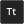

Sie können Code an verschiedenen Stellen in GameMaker Studio 2 verwenden, von Objekten über Räume bis hin zu Instanzen, und es gibt eine Reihe von integrierten Funktionen, die Ihnen das Programmieren mit GML oder Drag & Drop erleichtern. Es ist jedoch oft notwendig, dass Sie eigene Funktionen erstellen, um eine bestimmte Aufgabe auszuführen, oder einen großen Codeabschnitt zu einem besser handhabbaren Teil zusammenfassen oder sogar einen bestimmten Codeblock an vielen verschiedenen Stellen wiederverwenden können. Aus diesem Grund können Sie in GameMaker Studio 2 Skripte erstellen.
HINWEIS: In diesem Abschnitt werden zwar Skripts behandelt, das Codefenster, in das Sie Ihre Skripts schreiben, entspricht jedoch dem für Ereignisse, Raum- oder Instanzerstellungscode oder Shaders, und die hier beschriebene Funktionalität gilt für alle.HINWEIS: Diese Seite verweist auf GML zum Schreiben von Skripts, Sie können Skripts jedoch auch per Drag & Drop erstellen (siehe hier ). Egal, was Sie zum Codieren Ihres Projekts verwenden, die Informationen auf dieser Seite sind immer noch für den Editor selbst gültig.
Skripte werden mit der Skriptsprache GML geschrieben (weitere Informationen finden Sie im Abschnitt GML-Übersicht ). Dies ist die integrierte Programmiersprache, die von GameMaker Studio 2 verwendet wird. Sobald Sie sich mit GameMaker Studio 2 vertraut gemacht haben und es in vollem Umfang nutzen möchten, ist es ratsam, mit dem Erlernen dieser Sprache zu beginnen, da dies Ihre Möglichkeiten beim Erstellen von Spielen erheblich erweitert. Sie können Skripte auch per Drag & Drop schreiben, aber das erfordert einen anderen Editor und wird im Abschnitt des Handbuchs für Aktionsskripte beschrieben
Ein Skript (wie jede andere eingebaute Funktion) kann verschiedene Eingabevariablen annehmen, wie Real, String, Boolean und spezielle Werte all oder noone akzeptiert werden, und diese Eingabevariablen werden allgemein als Argumente bezeichnet, obwohl sie auch oft als Parameter bezeichnet werden. Um ein Skript aus einem Objekt oder einer Zeitleiste auszuführen, verwenden Sie den Skriptnamen so, als wäre es eine Funktion oder die GML-Funktion script_execute. Sie können das Skript benennen, indem Sie mit der rechten Maustaste klicken  Klicken Sie darauf im Ressourcenbaum und wählen Sie Umbenennen. Beachten Sie jedoch, dass der Skriptname den Skriptregeln für Funktionen entsprechen muss. Daher müssen sie mit einem Buchstaben beginnen und nur Buchstaben, Zahlen oder das Unterstrichsymbol "_" enthalten.
Klicken Sie darauf im Ressourcenbaum und wählen Sie Umbenennen. Beachten Sie jedoch, dass der Skriptname den Skriptregeln für Funktionen entsprechen muss. Daher müssen sie mit einem Buchstaben beginnen und nur Buchstaben, Zahlen oder das Unterstrichsymbol "_" enthalten.
Wie oben erwähnt, können Sie einem Skript (insgesamt 16) mehrere Argumente übergeben, die dann die Aufgabe ausführen, für die Sie es geschrieben haben. Um dies besser zu verstehen, nehmen Sie zum Beispiel eine Aktion (oder einen Code in GML) und denken darüber nach, wie es funktioniert... Sie platzieren es in ein Ereignis und spezifizieren eine Anzahl von Parametern und es wird Ihre Instanz dazu bringen, etwas zu tun. Skripte sind genau gleich, mit dem einzigen Unterschied, dass Sie sie schreiben. Sie können nicht nur Argumente in ein Skript eingeben, sondern Sie können auch ein Skript dazu auffordern, einen Wert zurückzugeben (mithilfe des return Schlüsselwort), so dass Sie damit Berechnungsmethoden (mathematische Methoden) erstellen oder eine Instanz-ID nach einer komplexen Kollisionserkennung oder einer beliebigen Anzahl von Dingen zurückgeben können. Bitte beachten Sie jedoch, dass die Verwendung von return das Skript beendet, so dass nach der Verwendung kein Code mehr ausgeführt wird. Dies bedeutet, dass Sie sich Gedanken darüber machen müssen, wie Ihre Skripts strukturiert sind.
Wenn Sie zum ersten Mal eine Ressource erstellen, wird das Skript-Editor-Fenster mit den folgenden Optionen geöffnet:
Der Skript-Editor wird in einem Fenster mit übergreifenden Registerkarten geöffnet, sodass Sie mehrere Skripts in einem Fenster haben können (dieses Verhalten kann jedoch in den Voreinstellungen geändert werden, um jedem Skript ein neues Fenster zu geben). Sie können klicken
Klicken Sie auf ein Skript, und ziehen Sie es, um die Registerkarten neu zu ordnen. Sie können es jedoch auch aus dem aktuellen Fenster ziehen und auf dem Arbeitsbereich platzieren, um ein neues Fenster für dieses Skript zu erstellen (oder es zu einem anderen Fenster hinzuzufügen) ), und Sie können auch den Skript-Editor maximieren, um auch einen neuen Arbeitsbereich zu erstellen. Wenn Sie eine Skriptregisterkarte aus dem IDE-Fenster ziehen, wird eine neue IDE erstellt, die diese Skriptressource enthält, und sie kann wie das Hauptfenster verwendet werden.
Beachten Sie, dass Sie, wenn Sie Code aus einem Objektereignis im Skript-Editor bearbeiten und den Skript-Editor maximiert haben oder sich in einem separaten Fenster oder Arbeitsbereich befinden, mit der rechten Maustaste klicken
Editor-Menü wird einige zusätzliche Optionen haben:
- In Arbeitsbereich wiederherstellen: Dadurch wird der Skript-Editor aus einem maximierten / Arbeitsbereich-Status entfernt und an das Objekt im Arbeitsbereich gebunden.
- Gehe zu Objekt: Dies bringt Sie zu dem Arbeitsbereich, in dem sich das Objekt mit dem Code befindet, und konzentrieren sich auf das Objekt.
- Ereignis hinzufügen / öffnen: Damit können Sie dem Objekt, zu dem das aktuelle Skript gehört, ein neues Ereignis hinzufügen und im Skript-Editor eine neue Code-Registerkarte für das hinzugefügte Ereignis öffnen. Wenn das ausgewählte Ereignis bereits Code enthält, wird dies in einem neuen Tab geöffnet.
Für Informationen über den Rest der rechten Maustaste
Der Gutter wird verwendet, um die Zeilennummern für Ihren Code anzuzeigen und um bestimmte Informationen zu übermitteln. Wenn Sie Fehler machen oder den Code falsch konstruieren, informiert das GameMaker Studio 2 IDE Sie über das Problem, indem Sie die Codezeile, die das Problem verursacht, mit einem roten Ausrufezeichen kennzeichnen
. Sie können dann mit der Maus über das Symbol gehen, um eine kurze Beschreibung des Problems zu erhalten:
Der Gutter markiert auch jede Zeile des Skripts, dem ein Breakpoint hinzugefügt wurde. Ein Haltepunkt ist einfach ein Ort im Skript, an dem das Debug-Modul die Ausführung Ihres Spiels anhalten soll, wenn es erreicht ist. Sie können einen Haltepunkt von jeder beliebigen Zeile eines Skripts oder Objektereignisses umschalten, indem Sie " f9 " drücken oder die rechte Maustaste drücken
Schließlich wird die Gosse auch alle mit Lesezeichen versehenen Elemente anzeigen. Um eine Codezeile als Lesezeichen zu speichern, halten Sie einfach die Maustaste gedrückt
/
+
+ Number (von 0 bis 9), und damit können Sie von überall in der IDE zu dieser Codezeile springen, indem Sie einfach
Während Sie im Skript-Editor arbeiten, können Sie drücken
Hier können Sie eine lokale Suche nach dem von Ihnen eingegebenen Keyword durchführen. Nachdem Sie Ihren Suchbegriff eingegeben haben, können Sie dann mit den Pfeilen oben rechts im Suchfenster von einem gefundenen Begriff zum nächsten im Skript springen. Sie können ändern, wie die Suche ausgeführt wird, indem Sie die folgenden Schaltflächen aktivieren:
Nur ganzes Wort: Wenn Sie dies umschalten, markiert die Suchfunktion nur die Zeichenfolgen, die der gesamten Eingabezeichenfolge entsprechen. Zum Beispiel, damit eine Suche nach „random“ wird sich zeigen alle Wörter aus, die diese Zeichenfolge enthalten - wie irandom(), oder randomise() - Beim Umschalten auf "Ein" wird nur die Funktion angezeigt random().  Case Sensitive: Wenn diese Option umgeschaltet wird, werden Sie sagen, GameMaker Studio 2 nicht nur den Inhalt des Suchbegriffs zu überprüfen, aber die zu Fall. Zum Beispiel, wenn Sie einen Sprit namens „spr_Dog“ und eine Suche nach „Hund“ mit umschalten aus, dann wird die Sprite - Zeichenfolge hervorgehoben werden, aber wenn der Knebel ist, dann wird es nicht da „Dog“ ist nicht länger als das Gleiche wie "Hund". Wenn Sie das Suchfenster mit geöffnet haben
um es zu öffnen. Nach dem Öffnen können Sie eine Zeichenfolge eingeben, die zum Ersetzen einer beliebigen Suchzeichenfolge verwendet wird. Verwenden Sie dazu die folgenden Schaltflächen, um die Aktion auszuführen:
Ersetzen Weiter: Wenn Sie auf diese Schaltfläche klicken, wird die nächste im Skript gefundene Suchzeichenfolge durch die angegebene Ersetzungszeichenfolge ersetzt. Beachten Sie, dass der Begriff "next" nach der aktuellen Position des Cursors als der nächste betrachtet wird und Sie mit den Pfeiltasten oben rechts im Suchfenster zu den anderen wechseln können. Alle ersetzen: Wenn Sie auf diese Schaltfläche klicken, werden alle Beispiele der Suchzeichenfolge im Skript mit der angegebenen Ersetzungszeichenfolge ersetzt. Beachten Sie, dass Sie, wenn Sie eine globale Suche durchführen möchten (dh das gesamte Projekt und nicht das aktuelle Skript durchsuchen), drücken können
Im Hauptskript-Editor schreiben Sie Ihren gesamten Code zum Erstellen des Skripts oder zum Füllen eines Objektereignisses. Skripts und Codeereignisse werden gemäß den allgemeinen Regeln für die GML-Syntax geschrieben (weitere Informationen finden Sie im Abschnitt " GML-Übersicht" ). Außerdem können Sie Hilfe beim Schreiben Ihrer Skripts aus dem Fenster "Automatische Vervollständigung" erhalten:
Dieses Fenster erscheint während des Schreibens Ihres Codes (normalerweise nach einer kurzen Pause, aber dies kann in den Voreinstellungen eingestellt werden ) und gibt Ihnen eine Auswahl an "best-fit" Antworten in alphabetischer Reihenfolge. Während Sie den Code-Editor verwenden, können Sie klicken
dann klick
Es ist erwähnenswert, dass Sie Ihren Code auf verschiedene Arten kommentieren können. Das Kommentieren Ihres Codes ist sehr wichtig für die Aufrechterhaltung der Produktivität, da es die Dinge klarstellt und Abschnitte des Codes so trennt, dass es offensichtlich ist, was jeder Teil tut und warum er da ist. Es bedeutet auch, dass Sie, wenn Sie in einem Team arbeiten, Notizen für andere Mitglieder hinterlassen können und dass sie genau wissen, was Sie getan haben oder wofür ein bestimmter Codeabschnitt gedacht ist. Selbst wenn Sie ein Solo-Entwickler sind, ist es wichtig, Kommentare für Ihren Code zu hinterlassen, besonders wenn Sie das Projekt verlassen und zu einem späteren Zeitpunkt darauf zurückkommen müssen.
Kommentieren Sie Ihren Code einfach, da Sie nur " // "vor jeder Textzeile oder Sie können ganze Absätze mit" /* text here */ ". Es gibt sogar zwei Tastenkombinationen zum Kommentieren und Auskommentieren ausgewählter Codezeilen:
Skripts können auch bestimmte Kommentare im JSDoc- Stil enthalten, so dass sie bei der Verwendung in Ihrem Code zusammen mit ihren Argumenten und anderen Details automatisch vervollständigt werden. Weitere Informationen hierzu finden Sie im Abschnitt JSDoc-Skriptkommentare. Beachten Sie, dass Skriptkommentare von der To-Do-Liste formatiert und analysiert werden können, sodass Elemente automatisch zur Liste hinzugefügt werden können (weitere Informationen finden Sie hier ).
Abgesehen von Kommentaren können Sie auch spezielle verwenden #region Tags, um einen Codeabschnitt für Code Folding zu markieren. Wie das funktioniert ist, dass Sie ein hinzufügen #region Tag (zusammen mit einem beliebigen Kommentartext) oben in einem Codeabschnitt und fügen Sie dann einen entsprechenden Code hinzu #endregion Tag an den unteren Rand des Abschnitts und dann können Sie den Code "falten", dh: verstecken Sie es weg, so dass Sie die Anzahl der Zeilen des Codes im Editor zu jeder Zeit reduzieren können:
Der eigentliche Code sieht ungefähr so aus:
#region This is an example region
width = sprite_get_width(sprite);
height = sprite_get_height(sprite);
xoff = sprite_get_xoffset(sprite);
yoff = sprite_get_yoffset(sprite);
#endregion Further comment here if requiredWie Sie vielleicht bemerkt haben, sind Teile des Skripttextes farbig. Der Skript-Editor "weiß" über vorhandene Objekte, eingebaute Variablen und Funktionen usw. und codiert sie entsprechend. Die Farbcodierung hilft Ihnen, Fehler zu vermeiden, da Sie sofort sehen können, wenn Sie einen Namen falsch geschrieben haben oder ein Schlüsselwort als Variable verwenden oder einen Syntaxfehler haben. Wenn Ihnen die Farbkodierung jedoch nicht gefällt, können Sie sie in den Voreinstellungen ein- und ausschalten (Sie können auch F10 verwenden) und die verwendeten Farben anpassen.
Sie können mit der rechten Maustaste klicken
Neben den regulären Funktionen zum Ausschneiden, Kopieren und Einfügen von Codezeilen haben Sie auch die Möglichkeit, markierten Text zu kommentieren oder auszukommentieren, Einzüge hinzuzufügen oder zu entfernen und das Codefenster in 1, 2 oder 3 separate Fenster zu teilen (Beachten Sie, dass die Optionen für #regions wird nicht verfügbar sein, wenn Sie im bearbeiteten Code keine definiert haben). Diese letzten Optionen teilen das Fenster in verschiedene Teile auf, wo Sie dann ein Skript ziehen und es neben den anderen zum Vergleichen und Bearbeiten anzeigen lassen können.
Dies ist besonders nützlich, um zwei Skripts zu vergleichen oder gleichzeitig verbundene Skripts anzuzeigen, ohne dass ein weiteres Fenster benötigt wird oder dass ständig zwischen den Registern gewechselt werden muss. Die anderen Optionen in diesem Menü bestehen darin, einen Haltepunkt zur Verwendung mit dem Debugger umzuschalten und den GML-Code in DnD™ oder umgekehrt umzuwandeln. Beachten Sie, dass bei der Konvertierung von Code in DnD™ keine einzelnen Aktionen für jede Codezeile erstellt werden, sondern eine einzelne Codeaktion verwendet wird, um alles zu speichern, was zuvor im Ereignis oder Skript enthalten war.
Ein weiteres sehr praktisches Werkzeug, das Sie beim Bearbeiten Ihrer Skripte zur Verfügung haben, ist die Verwendung von Code-Snippets. Durch Drücken F4 Sie öffnen das Code-Snippet-Popup, in dem Sie eine der gebräuchlichsten Code-Methoden auswählen können. Sie können auch eigene Code-Snippets definieren, indem Sie sie in dem Verzeichnis speichern, in dem Sie GameMaker Studio 2 im folgenden Verzeichnis installiert haben: \GameMaker Studio 2\TextEditor\snippets.txt. Sie können diese Datei mit einem beliebigen Texteditor bearbeiten, indem Sie folgende Regeln beachten:
- Jedes Snippet befindet sich in einer separaten Zeile (es sollten keine Leerzeilen vorhanden sein).
- Jedes Snippet beginnt mit dem Namen des Snippets (was im Menü angezeigt wird), gefolgt vom Doppelpunkt (:), gefolgt vom eigentlichen Codeschnipsel.
- Verwenden Sie # für einen Zeilenumbruch und platzieren Sie den Text, der zuerst ausgewählt werden soll, zwischen | Symbole.
Sehen Sie sich die Beispiele an, die sich bereits in der Datei befinden, um zu sehen, wie sie gemäß den oben genannten Regeln eingerichtet werden. Es wird dringend empfohlen, eine Sicherungskopie davon zu erstellen, bevor Sie Änderungen vornehmen, und alle Änderungen an der Datei zu sichern Wenn das Programm erneut installiert oder aktualisiert wird, werden die vorgenommenen Änderungen rückgängig gemacht. Sie können die Sicherung verwenden, um sie erneut zu wiederholen.
Die Informationsleiste am unteren Rand der IDE zeigt Ihnen die aktuelle Zeilennummer und die Position in der Zeile an. Dort können Sie auch den Code-Helper sehen, bei dem es sich um eine Textzeile handelt, die die gerade bearbeitete Funktion zusammen mit den erforderlichen Argumenten anzeigt. Wenn Sie die Funktion im Editor ausfüllen, werden die Argumente hervorgehoben, um Ihnen anzuzeigen, welche Sie gerade bearbeiten. Wenn Sie die JSDoc-Skriptkommentare in einem benutzerdefinierten Skript verwendet haben, werden die von Ihnen angegebenen Informationen auch hier angezeigt.